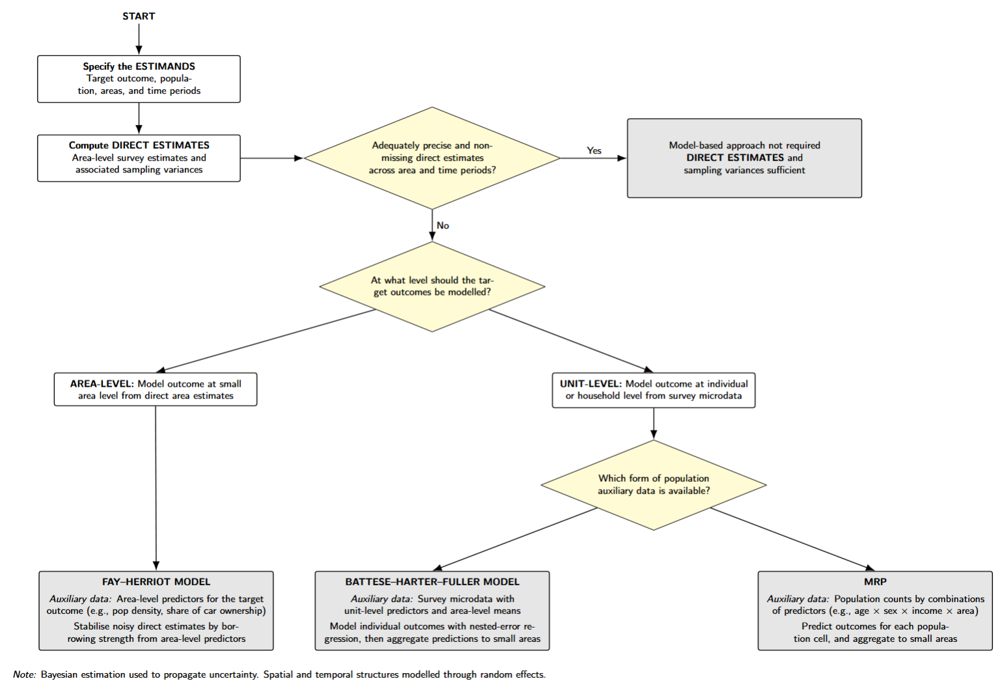

SAE Toolkit
Bring your own survey into the workflow
This SAE toolkit shows how to adapt the tutorial workflow to your own survey, geography, and outcome by mapping your data to a common schema and reusing the same estimation steps.
1. Define the estimates you need
Start by writing the estimand in plain language. It should say:
- what outcome is being estimated;
- who is in the target population;
- which areas need estimates;
- which time periods need estimates.
In a spatio-temporal SAE workflow, the target estimate is produced for every area-by-period combination. This tutorial calls that combination an area-time cell. In the Wales example, one area-time cell is one MSOA in one survey year.
2. Prepare the input tables
The workflow expects a small set of analysis-ready tables. They do not have to come from the same source, but they must use the same area_id and time_id values.
Survey indicator
One row per respondent-period for the outcome being estimated.
| Column | Meaning |
|---|---|
unit_id |
Respondent or respondent-period identifier |
area_id |
Area assigned to the respondent |
time_id |
Survey period |
indicator |
Outcome used in estimation, often binary or continuous |
weight |
Survey or analysis weight |
strata |
Survey stratum, where available |
Domain frame
One row for every area-time cell that should receive an estimate. This table defines the target grid, including cells with no survey respondents.
| Column | Meaning |
|---|---|
area_id |
Area to estimate |
time_id |
Time period to estimate |
| labels | Optional area or period labels for reporting |
Area predictors
One row per area, with predictors used to explain spatial differences in the outcome.
| Column | Meaning |
|---|---|
area_id |
Area identifier |
cov_* |
Model-ready area predictors |
raw_* |
Optional raw values kept for interpretation |
Population frame
Needed when the final estimate is produced by aggregating model predictions over population groups, as in MRP.
| Column | Meaning |
|---|---|
area_id |
Area identifier |
time_id |
Time period |
| population groups | Age, sex, household type, or other poststratification categories |
pop_count |
Population count for each cell |
3. Choose the modelling route

4. Use the scripts
These public scripts are intended for adapting the workflow to another survey or outcome. Edit the setup block in each script for file paths, source columns, target areas, time periods, and model covariates.
| Workflow step | Script | Use it for |
|---|---|---|
| Direct estimation | calculate_direct_estimates.R |
Produce area-time direct estimates, sampling variances, and sample counts |
| Area-level SAE | fit_fh_inla_area_level.R |
Fit a spatio-temporal Fay–Herriot area-level model with R-INLA |
| Unit-level SAE | fit_bhf_inla_unit_level.R |
Fit a BHF-style unit-level model and aggregate predictions to area-time cells |
| MRP | Forthcoming | Fit a multilevel model and poststratify over population cells |
The model-fitting steps are shown in the direct estimation, Fay–Herriot, unit-level, and MRP workbooks.
5. Expected outputs
All method outputs should keep the same identifying columns so estimates can be compared, mapped, and joined back to other urban datasets.
| Column | Meaning |
|---|---|
area_id |
Estimated area |
time_id |
Estimated period |
estimate |
Direct or model-based point estimate |
variance |
Sampling or posterior variance |
lower, upper |
Interval bounds, where produced |
n |
Usable survey observations, where relevant |
method |
Direct, Fay–Herriot, BHF, MRP, or another method label |